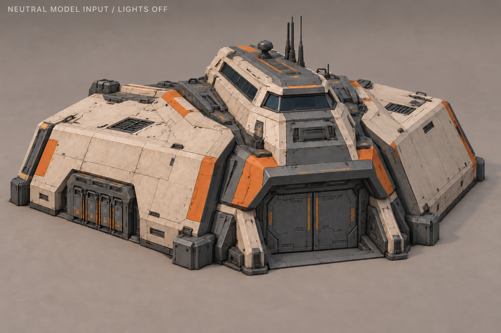

Штаб людей · C «Клин»
Выбран 28 октября 2026. Ворота закрыты. Песочная броня, графит, приглушённый оранжевый и янтарные индикаторы.
Паспорт моделирования · Поиск A–H
Основной вид

Исправленные ракурсы V3

Художественный лист: скрытые поверхности уточняются на одном объёмном блоке. Основной вид имеет приоритет при расхождениях деталей.